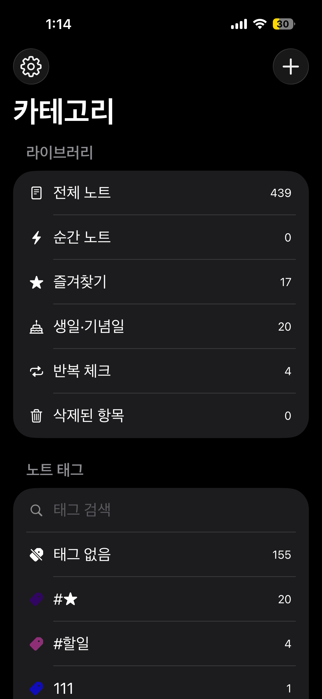

신규 — AskNote
정성스럽게 만든
정성스럽게 만든
생산성 앱.
WeeklyTodo, TagNote, AskNote — 한 주를 계획하고, 생각을 기록하고, AI와 함께 사고를 확장하도록 돕는 생산성 앱입니다. 군더더기 없이 자연스럽게 사용할 수 있도록 설계했습니다.
WeeklyTodo
하루가 아닌 한 주를 계획하세요
살펴보기 →
TagNote
스스로 정리되는 메모
살펴보기 →
AskNote
내 노트를 아는 AI
살펴보기 →

하루가 아닌
한 주를 계획하세요.
주간 관점으로 삶을 정리하세요. 작업을 계획하고 일정을 관리하며, 위젯과 동기화까지 갖춰 마감을 놓치지 않도록 도와줍니다.
- 미리 계획하기 좋은 주간 뷰
- 항상 최신 상태인 홈 화면 위젯
- iPhone과 Mac 간 즉시 동기화

스스로
정리되는 메모.
강력한 태깅 시스템으로 메모를 정리하세요. 리치 텍스트, 폴더, 클라우드 동기화로 모든 아이디어를 다시 쉽게 찾을 수 있습니다.
- 경직된 폴더 대신 태그 기반 정리
- 즉시 검색되는 리치 텍스트 편집
- 모든 기기 간 클라우드 동기화

내 노트를
아는 AI.
나의 노트에 대해 AI에게 질문하세요. 회의와 강의를 녹음하고 온디바이스 AI로 자동 요약하며, 노트와 대화하세요 — 완전한 오프라인, 완전한 프라이버시로.
- 내 노트 전체를 대상으로 질문하기
- 오프라인에서 회의 녹음 & 요약
- Gemini, Claude, ChatGPT 등 직접 연결
왜 AinzApp인가
불필요한 것은 덜어내고
크로스 플랫폼
iPhone, iPad, Mac 어디서든 데이터에 원활하게 접근하세요.
안전한 프라이버시
업계 표준 보안으로 내 데이터를 안전하게 보호합니다.
빠르고 효율적
모든 기기에서 속도와 최소한의 리소스 사용을 위해 최적화되었습니다.
아름답고 간결하게
현대적이고 직관적인 인터페이스가 사용에 방해되지 않습니다.